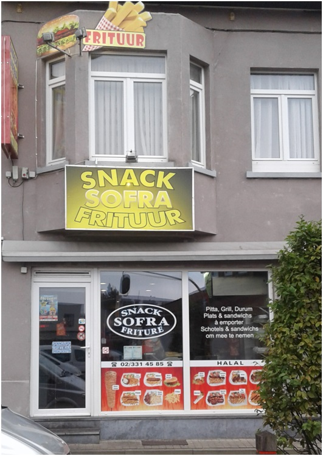

Snack Sofra, meer dan 1 snack, het is een concept. Het is het maken van een gezeilig plek voor iedereen uit de stad Sint-Pieters-Leeuw waar iedereen lekkere gerechten kunnen eten.
Kom bij Sofra en proef naar allerlei Turkse en Belgische gerechten.
We zullen u verwelkomen met veel plezier.
Aan Tafel !!!
